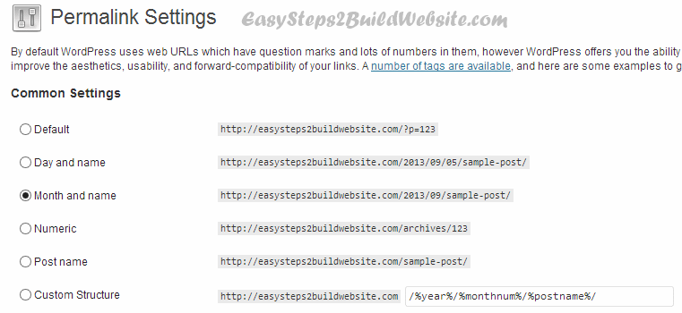
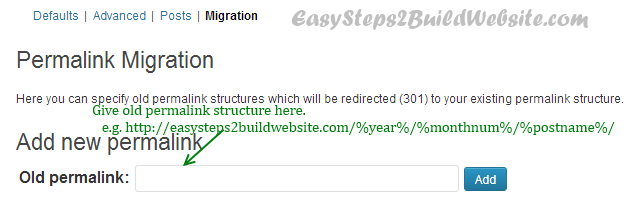
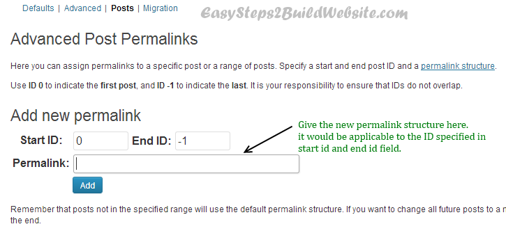

Changing permalink structure is an easy task but doing it properly without losing traffic & SEO is important thing. In this post we are gonna see what are the ways to change permalink structure in WordPress without any issues (Redirection, 404 errors).
Last Post: Best Permalink Structure for WordPress seo
For first time change: If you are changing the default WordPress permalink structure (like this one: https://beginnersbook.com/?p=123) then you won’t need to use any of the below method as the WordPress itself will take care for all the 301 redirects to new posts/pages.
For others permalinks you have two ways to do it –
1) Permalink migration using WordPress plugin – This method is useful if you do not want to change permalink structure for the existing posts but for new posts.
2) Manually modifying .htaccess file – This method would change the structure for all the posts/pages, irrespective of whether its new or old.
Permalink structure migration using WordPress plugin
We will be using Advanced Permalinks plugin for this task.
Step 1: Download the plugin from: Advanced WordPress Permalinks and Activate it.
Step 2: In WordPress dashboard go to Settings » Permalinks, you would see a screen, which would be having 4 tabs at the top (by default there is no tab but it will appear once you have the above plugin activated on the website).
Step 3: Here we will see two cases –
Case 1: Change permalinks for all the existing and coming posts
Select the new permalink structure as shown below. This action will change the permalinks for the posts/pages as per the selected one but there are few issues which will occur –
- On accessing the old url – result in 404 page not found error
- SEO will lose for old url – loss in page rank and seo benefits so the ranking will suffer.
Solution: To avoid above two issue, we need to setup a 301 redirect (also known as permanent redirect) from old url to new url. For this only we are using the plugin.

Choose the “migration” at the top the screen would look like below. Give your old permalink structure and click Add as shown below. This action will setup as 301 redirect from old permalink structure to new permalink structure.

Case 2: Change permalinks for all the existing and coming posts
In that case, instead of selecting the “migration” tab use the “Posts” tab as shown below. Specify the new permalink structure and the range of post ids for which you want the new structure to be applicable. In that way you can just leave the old existing posts as it is.

Manually modifying .htaccess file
If you don’t want to use a plugin then you can do it by yourselves. All you have to do is first select the preferred permalink structure in Settings » Permalinks as we did in step 3 above and then add 301 redirects in .htaccess file (from old url to new url, in order to avoid 404 errors and traffic loss).
You may want to change the structure to http://your-domain.com/%postname%/ (which is the best, as per me) then select this one in permalink settings and add the below code in .htaccess file.
Note: All the below redirects will work only if your new permalink structure is http://your-domain.com/%postname%/
a) Old permalink: http://domain.com/%year%/%monthnum%/%day%/%postname%/
[code autolinks=”false”]RedirectMatch 301 ^/([0-9]{4})/([0-9]{2})/([0-9]{2})/(.*)$ http://domain.com/$4[/code]
b) for http://domain.com/%year%/%monthnum%/%postname%/
[code autolinks=”false”]RedirectMatch 301 ^/([0-9]{4})/([0-9]{2})/(.*)$ http://domain.com/$3[/code]
c) for http://domain.com/archives/%post_id%
[code autolinks=”false”]RedirectMatch 301 ^/archives/(d+)$ http://domain.com/?p=$1[/code]
d) for http://domain.com/%category%/%postname%
[code autolinks=”false”]RedirectMatch 301 ^/([^/]+)/([^/]+)$ http://domain.com/$2[/code]
e) for http://domain.com/?p=123
No need to do anything, WordPress itself will setup redirects for you!!.
You can also try Yoast’s tool to generate 301 redirects while changing permalink structure.
Hi Chaitanya, thank you for the nicely structured post and the recommendation of this tool. I tested 2 other plugins first but they had no effect. This now has the desired one. BUT: It redirects with a 302, not a 301 which I would like to have, since all the redirects should be permanent and not temporary. Do you know how to modify the plugin?
thx in adavance,
Benjamin
In my website http://www.crappy3.com I am planning to change the url to have “post/%post-Title%” instead of just the “%post-Title%”.
Looking forward to this tutorial to make the change successfully. Thanks for sharing.
Hey,
I want to change the permalinks from Advanced WordPress Permalinks /%postname%-%year%-%monthnum%-%day%/ to /%postname%
How do i acomplish this without loosing backlinks?
Thanx
PS the plugin is really old does it still work?